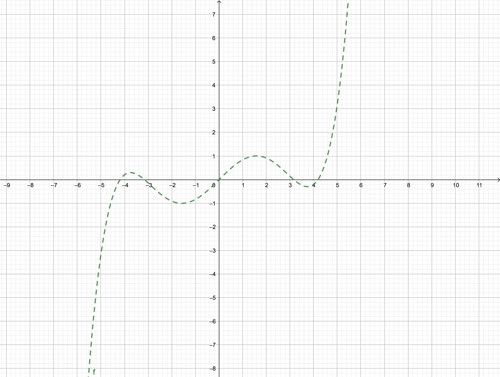
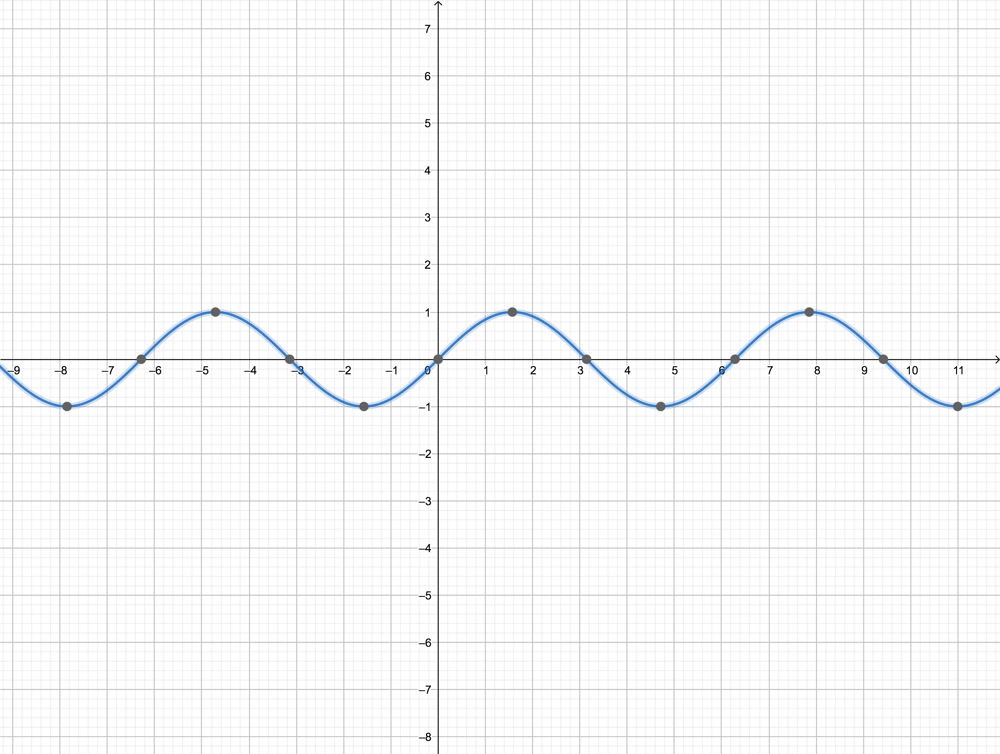
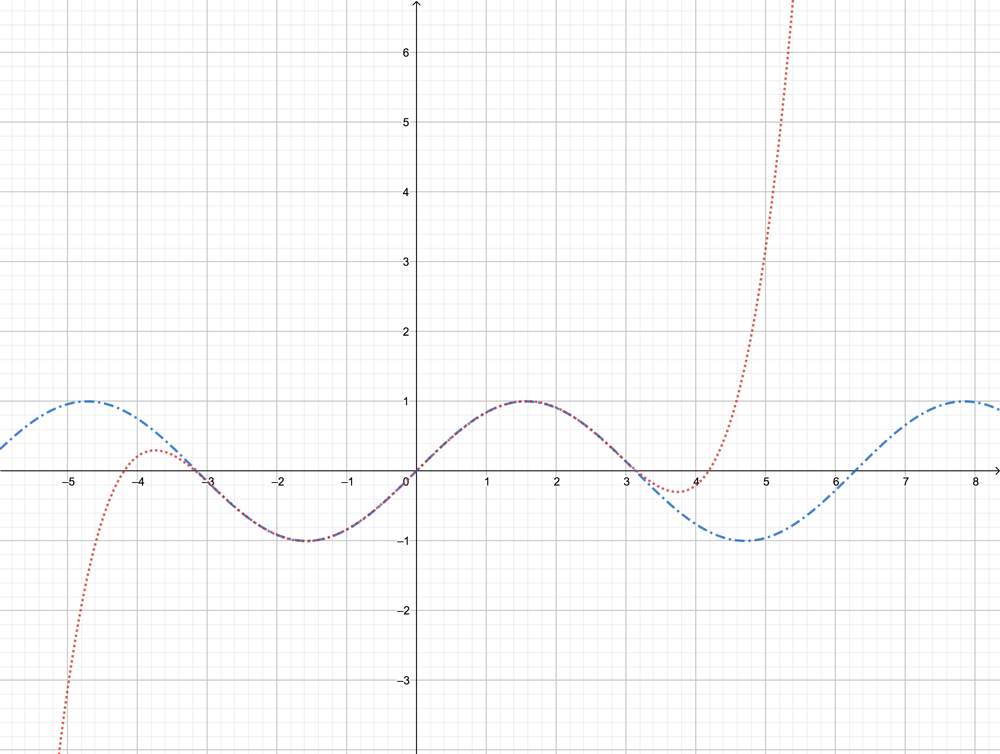

Efficient Methods for Evaluating Polynomials
Keywords: evaluating polynomials, nested multiplication
It had been said that the more basic the operations are, the more we can stand to gain by doing it efficiently. Addition and multiplication may be the most basic operations to us all, and so is their combination, the polynomials. Many functions, however, complicated they are, can be approximated by a polynomial. For instance: $\sin(x),x\in[-\pi,\pi]$ can be approximated by
their curves are like these:
- $g(x)=0.987862x-0.155271x^3+0.00564312x^5$

- $f(x)=\sin(x)$

- $f(x)=\sin(x)$ and $g(x)=0.987862x-0.155271x^3+0.00564312x^5$

All figures above show how sophisticated polynomials are approximated. However, How to get this polynomial is not the things we will concern in the class, and what we should worry about is how to compute the formula (1) more efficiently.
Measure the efficiency of the operation
We, now, change our polynomial (1) to a general one which contains entries of all distinct integer exponents:
What we gonna do is to find the best way to evaluate polynomial (2) at $x=\frac{1}{2}$. Assuming that, the coefficients of the polynomial and the number $\frac{1}{2}$ are always stored in memory or even registers, which is to say that we will not take the transportation time into account.
However, How to measure the efficiency of evaluating is a new problem coming to our faces, however, I got two ways to solve this problem:
The first one is to count the ticks of the entire process, which is in the view of time. For instance, if our algorithm has taken 10 seconds, and the state-of-art algorithm have taken 11 seconds, Our algorithm would be the best for now.
The second is to count the total quantity of the operations of the algorithm, such as, if our algorithm has had 10 multiplications and 5 additions, while the state-of-art algorithm has had 11 multiplications and 5 additions, our algorithm would be better.
In this section, we will measure the efficiency of the algorithm through the second way, count the quantity of the operations.
Evaluating a Polynomial
Now, we go back to our main problem of finding out the best way to evaluate:
Method 1
In a usual way, we will calculate
There are $4+3+2+1=10$ multiplications and $1+1+1+1=4$ additions(the subtraction here is regarded as the same as addition).
Method one has 10 multiplications and 4 additions.
Method 2
Smart readers may have found that we have done ‘$\frac{1}{2}\times \frac{1}{2}$’ more times than necessary, while, some result can be stored in the memory instead of computing again and again, which will save many resources of computation. So the method becomes:
That is to say $(\frac{1}{2})^2$ has one multiplication, and $(\frac{1}{2})^3$ has two multiplications, while the $(\frac{1}{2})^3$ has two multiplications as well. So there totally are $2+2+2+1=7$ multiplications and 4 additions(the subtraction here is regarded as the same as an addition).
Method two has 7 multiplications and 4 additions.
Method 3(Nested Multiplication)
Rewrite the polynomial as:
When $x=\frac{1}{2}$, we evaluate the polynomial from the inside out:
$\frac{1}{2}\times 2$ , add $+3\to 4$
$\frac{1}{2}\times 4$ , add $-3\to -1$
$\frac{1}{2}\times (-1)$ , add $+5\to \frac{9}{2}$
$\frac{1}{2}\times \frac{9}{2}$ , add $-1\to \frac{5}{4}$
This method is called nested multiplication or Horner’s method, in which there are 4 multiplications and 4 additions. A general degree $d$ polynomial can be evaluated in $d$ multiplications and $d$ additions.
The example of polynomial evaluation is characteristic of the entire topic of computational methods for scientific computing. While the standard form for a polynomial $c_1+c_2x+c_3x^2+c_4x^3+c_5x^4$ can be written in nested form as:
Interpolation Calculations
In chapter 3 we will require the form：
where we call $r_1,r_2,r_3$ and $r_4$ the base points. when we set $r_1=r_2=r_3=r_4=0$, formula (0.8) is recovered to formula (0.7).
Conclusion
Polynomial can be evaluated in a very efficient way through nested multiplication. But, what is more important for us in this subject are these:
Computers are very fast at doing very simple things.
It’s important to do even simple tasks as efficiently as possible.
The best way may not be the obvious way.
Reference
- Sauer, T., Columbus, B., New, I., San, Y., Upper, F., River, S., … Tokyo, T. (n.d.). Numerical Analysis. Retrieved from http://www.pearsoned.com/legal/permissions.htm.